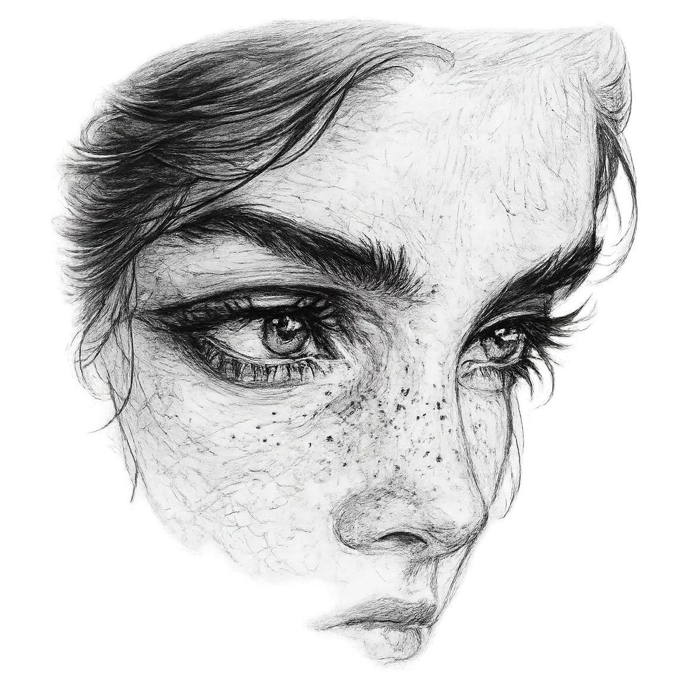

ایمی
قسمت ۸
هانس در حالی که خودش را با دستمالی خشک میکرد بیصبرانه منتظر جان بود. مدام منو را نگاه میکرد. بار هشتمی بود که آن را میخواند. بار دیگر تمام صندلی و بشقاب و صندلیها را مرتب کرد. گارسون به سوی هانس آمد. هانس انقدر در استرس غرق شده بود که لحظهای او را با جان اشتباه گرفت. سپس با معذرتخواهی از گارسون خواست که کمی بعدتر برای سفارش پیش او بیاید. در همین لحظه چشمانش جان را شکار کرد. جان با قدی کشیده در حالی که کت و شلوار یک پارچه مشکی و دستمال سفیدی در جیبش مانند یک شمش طلا بین هزاران تن زغالسنگ بود. با قدمهایی شمرده به سوی هانس در حال حرکت بود. هانس بلافاصله از جایش بلند شد و جان را بابت تاخیرش و استرسی که به او تحمیل کرده بود توبیخ کرد. جان هم ساعت جیبیاش را از جلیقهی کتش بیرون کشید و بر روی صندلی چوبی روبهروی هانس نشست. ساعت ۱۹:۳۲ را نشان میداد. سپس جان بدون حرفی ساعت را به هانس نشان داد و هانس در جواب گفت:«بکل یک مدل دیر کردن داریم. اونم خیلی دیر کردن. جنابعالی هم ۲ دقیقهای هست که من رو در استرس تنها گذاشتی.» جان لبخندی زد و زیر لب با خود گفت:«خب شاید تو یکم زود رسیدی.» سپس بلند به هانس گفت:«خب دختری که دربارش حرف میزدی کجاست؟ مشخصا اون از من دیرتر میا...»
* اوه... آقای جان... خیلی بده که زود تصمیم بگیرید. من خودم از دور شما را زیر نظر داشتم اما نمیخواستم زودتر از شما بیام که هانس عزیز استرس زیادی بگیره.
جان کمی جا خورده بود. انتظار نداشت کسی از پشت به او نزدیک بشود. اما تعجب اون بیشتر از چشمان دختر بود. حالت خاصی داشت. چشمانی بود که دوست داشت آن را نقاشی کند.
+ سلام... ایمی... نمیدونستم زودتر رسیده بودی. خب بذار شماها را به هم معرفی کنم.
جان از جایش به احترام ایمی بلند شد. سپس کلاهش را به نشانه احترام بلند کرد و ایمی هم به روش سلطنتی احترام جان را بجای آورد. جان که این حرکت را دید بلافاصله پرسید:«شما از لندن هستید؟»
* خیر. در اصل از سمت نیوپورت میام.
+ خب... بنظرم اول بیاید یک چیزی سفارش بدیم چرا که بدون شکم خالی نمیشه مکالمه پر باری داشت.
- خب چند وقت هست که دوست عزیز من رو تحت نظر داری؟
* فکر کنم ده دقیقه قبل از اینکه شما بیاید.
گارسون غذا و نوشیدنیها را آورد. مهمانی شروع شد. هر سه از هر گوشه دنیا صحبت میکردند. هانس دنبال این بود که تنها ایمی را با جان آشنا کند. دوست نداشت کورکورانه زنی را برای همراهی خودش انتخاب کند برای همین جان کنار آنها بود. ساعاتی گذشت تا تصمیم گرفتند که رستوران را سه نفره ترک کنند. جان به صندلیاش تکیه داد. با دقت به چشمان هانس و ایمی مینگرستید. ایمی توجهی به جان نداشت. چشمانش روی هانس قفل شده بود. صورتش ناراحتیای در خود پنهان کرده بود. تا اینکه گارسون با قبض آمد. هانس تا خواست در جیب کند ایمی از اون خواست که یا او پرداخت کند یا اجازه دهد که سهمش را خودش پرداخت کند. دقایقی مجادلهای بین این زوج بود. تا اینکه گارسون رسید را از هر دوی آنها گرفت. هانس و ایمی با تعجب به رفتار گارسون نگاه میکردند. تا اینکه جان گفت:«خب هر چه زودتر برید قبل از اینکه از اینکارم پشیمون بشم. برید بیرون یکم باهم حرف بزنید و قدم بزنید. من میرم خونه.» سپس هانس و ایمی از جایشان بلند شدن و جان هم پیپش را روشن کرد و با لبخندی به جان گفت:«دختر مردم از راه به در نکنی.»
* ممنون بابت نگرانیتون آقای جان.
+ ممنون رفیق... توی خونه میبینمت.
جان هم کلاهش را بار دیگر به نشانه خداحافظی بلند کرد و به صندلی میز تکیه داد و شاهد در باز کردن هانس برای ایمی بود. جان خوشحال بود.